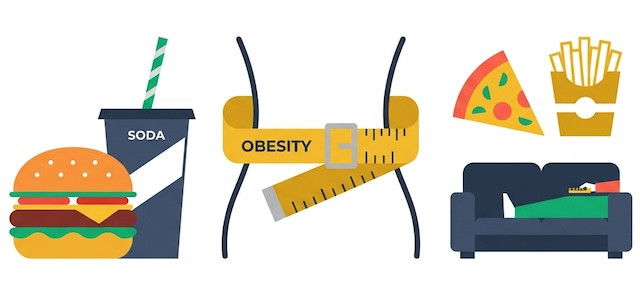
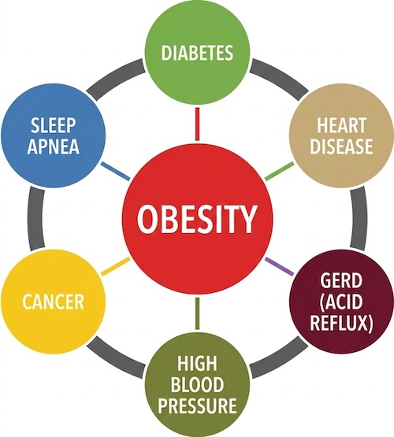

How to write cause/effect essays in IELTS?
Cause and effect essay questions in IELTS Writing task 2 give you a problem and ask you to state the main causes of this problem and discuss its possible effects.
In this lesson you will see:
- how to generate ideas for causes and effects
- band 9 answer structure for causes/effects essay
- cause/effect model essay
This is an example of cause/effect IELTS writing task 2 question:
Today more people are overweight than ever before.
What in your opinion are the primary causes of this?
What are the main effects of this epidemic?
Generating ideas
After you’ve read the question, you can clearly determine the problem: growing number of overweight people.
But before you start to write your essay, it’s a good idea to think of 2-3 causes and 2-3 possible effects of the problem.

Causes of obesity:
- inactive lifestyle (relying on cars instead of walking, fewer physical demands at work, inactive leisure activities)
- unhealthy eating habits (eating fast-food, drinking high-calorie beverages, consuming large portions of food, eating irregularly)

Effects of obesity:
- physical health problems
- loss of productivity
- depressions and mental disorders
Now, after we’ve generated the main ideas for causes and effects, it’s time to use these ideas in our essay.
Band 9 answer structure
As you know, there are many ways to structure your essay, but we’ll use a structure that has been approved by many IELTS examiners to be high-scoring and coherent.
Band-9 essay structure:
- Introduction
- Body paragraph 1 - causes
- Body paragraph 2 - effects
- Conclusion
Let’s take a look at each of these sections in detail.
Introduction
Write your introduction in two sentences:
- Sentence 1 - paraphrase the statement (you can use ‘nowadays/today/these days’ to start):
Nowadays the number of overweight people is constantly growing.
- Sentence 2 - say what you’ll write about in your essay:
This essay will discuss the main reasons of this epidemic and then describe the possible effects of the problem.
Body paragraph 1 - causes
- Sentence 1 - state all the main causes of obesity:
In my opinion, the foremost causes of obesity are inactive lifestyle and unhealthy eating habits.
- Sentences 2-3 - describe the first cause. Assume that your examiner has no knowledge in this area and
you
have to explain all the details to him.
Today more and more people rely on cars instead of walking, have less physical demands at work and prefer inactive leisure activities. This results in burning less calories and gaining weight.
- Sentences 4-5 - describe the second cause. Don’t forget that it’s useful to give examples while
describing
causes!
Moreover, the problem is accentuated by the growing number of people, who eat irregularly and consume large portions of high-calorie food. For example, about 50% of the adult population in Europe with so-called disordered eating suffer from obesity.
Body paragraph 2 - effects
- Sentence 1 - state all the possible effects:
The possible effects of this problem include physical health problems and loss of productivity.
- Sentences 2-3 - explain the first effect and give an example:
First of all, obesity results in incorrect functioning of the human body and contributes to the risk of developing some chronic illnesses. For example, as body fat percentage increases, the person’s metabolism worsens, which in turn may result in diabetes or heart diseases.
- Sentences 4-6 - explain the second effect and support it with an example:
Secondly, overweight people are very unhealthy and often suffer from stress and tiredness. This lessens their work capacity and results in lower productivity. For example, it has been proven that an obese person needs to put more effort to complete some task than a person with normal weight.
For the conclusion you need simply to restate the problem and sum up the causes and effects that you described in your body paragraphs:
To sum up, obesity is a big problem that affects a lot of people nowadays. It’s mainly caused by inactive lifestyle and eating disorders and results in severe health problems and loss of productivity.
Model essay
Nowadays the number of overweight people is constantly increasing. This essay will discuss the main reasons of this epidemic and then describe the possible effects of the problem.
In my opinion, the foremost causes of obesity are inactive lifestyle and unhealthy eating habits. Today more and more people rely on cars instead of walking, have less physical demands at work and prefer inactive leisure activities. This results in burning less calories and gaining weight. Moreover, the problem is accentuated by the growing number of people, who eat irregularly and consume large portions of high-calorie food. For example, about 50% of the adult population in Europe with so-called disordered eating suffer from obesity.
The possible effects of this problem include physical health problems and loss of productivity. First of all, obesity results in incorrect functioning of the human body and contributes to the risk of developing some chronic illnesses. For example, as body fat percentage increases, the person’s metabolism worsens, which in turn may result in diabetes or heart diseases. Secondly, overweight people are very unhealthy and often suffer from stress and tiredness. This lessens their work capacity and results in lower productivity. For example, it has been proven that an obese person needs to put more effort to complete some task than a person with normal weight.
To sum up, obesity is a big problem that affects a lot of people nowadays. It’s mainly caused by inactive lifestyle and eating disorders and results in severe health problems and loss of productivity.
(251 words)